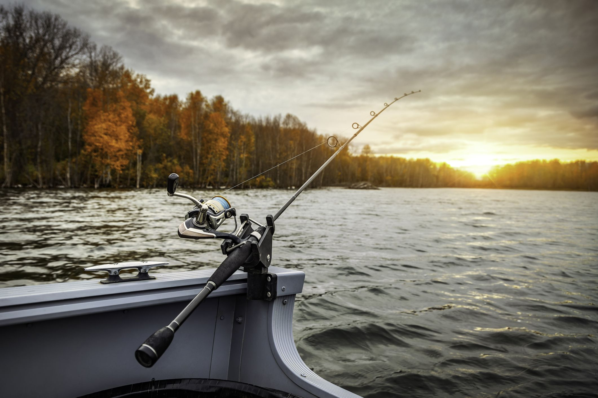
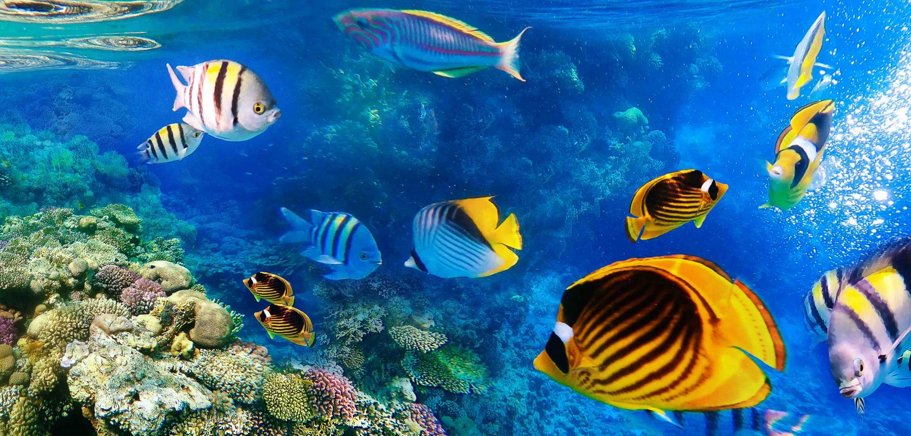

Take Me Fishing Blog
Check our inspiring and educational blog articles about fishing and boating written by experts. Get fishing tips and tricks and read personal stories from anglers who live and breathe fishing and boating. Learn new fishing skills, boating resources, fishing etiquette, conservation and more.
5 Fishing Facts You Never Knew
The Ancient Practice of Fishing
Fishing is one of the oldest human practices dating back nearly 40,000 years. Archaeological evidence like fish hooks made of bone and cave paintings depict early humans fishing, underlining the fact that this pastime has been central to our survival and cultural evolution.
Fishing’s Economic Impact
Fishing isn’t just a hobby—it’s a significant economic force. Globally, it’s estimated that the fishing industry, including commercial, recreational, and subsistence fishing, contributes over $240 billion to the world economy each year, providing livelihoods for hundreds of millions of people.
A World of Fish Species
There are approximately 34,000 species of fish in the world, more than all birds, mammals, reptiles, and amphibians combined! From the smallest Paedocypris to the largest whale shark, the diversity in the piscine world is truly astonishing.
Fish Feel Pain
Contrary to common belief, scientific research shows that fish can feel pain. Their nervous systems are complex, similar to birds and mammals, and they respond to harmful stimuli. This understanding has led to the development of more humane fishing practices.
Recreational Fishing Popularity
Recreational fishing, also known as sport fishing, is a popular hobby worldwide. In the U.S. alone, more than 49 million people engage in recreational fishing annually.